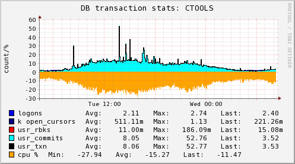
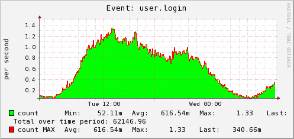

| [Login] |
CTools executive overview | [Home]
[RCS
Log] 2010-04-28 08:19:43 Refreshing in 24m 44s |
[Past 28 Hours] [Past Week] [Past Month] [Past Quarter] [Past Year] [Past 2 Years]
| |
|  | |
| |
| |
|  | |
| |
means there is no info to draw a graph for the selected
time-period